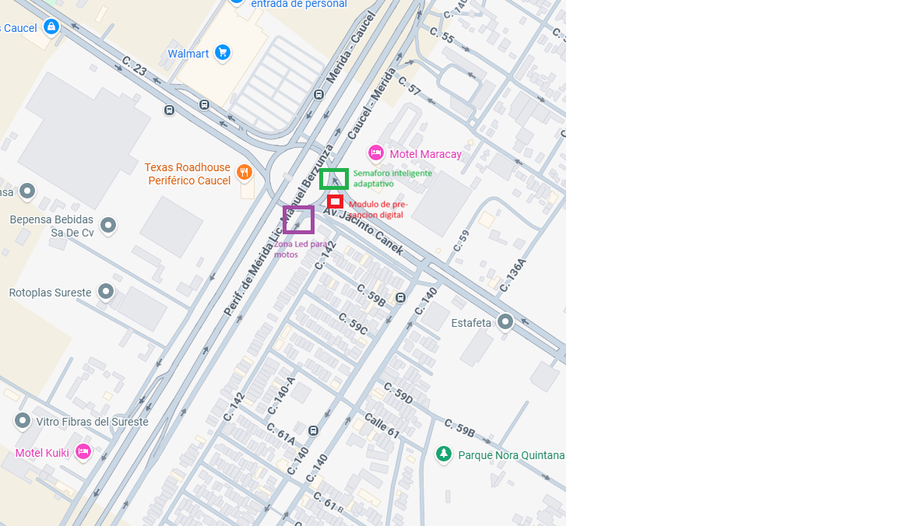

1. Semáforos con IA
Control predictivo y adaptativo de tiempos semafóricos usando visión artificial para despejar las laterales según la densidad del tránsito.
Optimizando el flujo vehicular y protegiendo a los usuarios más vulnerables mediante ingeniería mecatrónica y visión artificial en el Periférico.
Mérida Fluye surge como una respuesta técnica a los problemas de movilidad urbana, promoviendo la equidad en el transporte mediante sistemas dinámicos que integran a la base de la pirámide trabajadora a una infraestructura vial segura y moderna.
En el Anillo Periférico de Mérida, la restricción de tránsito en pasos a desnivel para motocicletas con motores menores a 350 cc obliga a miles de usuarios a circular por vías laterales e intersecciones críticas bajo los puentes.
Esta situación perjudica diariamente el tiempo y la seguridad física de los sectores que dependen de su motocicleta como herramienta económica primaria, generando una brecha en la infraestructura vial urbana.
Un sistema de gestión dinámico, sustentable y de bajo costo de implementación, diseñado para operar en tiempo real:

Control predictivo y adaptativo de tiempos semafóricos usando visión artificial para despejar las laterales según la densidad del tránsito.
Zonas de espera adelantadas incrustadas en el pavimento con indicación luminosa activa para dar prioridad física y visibilidad a los motociclistas.
Módulo de contratos inteligentes y cámaras para registrar invasiones indebidas, priorizando alertas educativas antes de penalizaciones monetarias.
Participa en las pruebas comunitarias o envía tus dudas y apelaciones al equipo técnico.